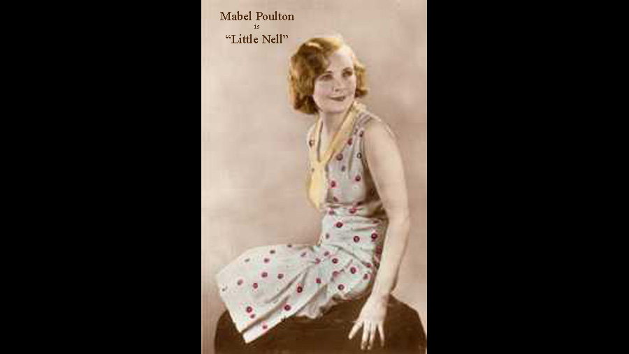

| Character | Actor |
|---|---|
| Little Nell | Mabel Poulton |
| Grandfather Trent | William Lugg |
| Quilp | Pino Conti |
| Mrs. Quilp | Dezma du May |
| Sampson Brass | Cecil Bevan |
| Sally Brass | Beatie Olna Travers |
| Dick Swiveller | Colin Craig |
| The Single Gentleman | Bryan Powley |
| Tom Codlin | Hugh E. Wright |
| Mrs. Jarley | Minnie Rayner |
| Tom Scott | Barry Livesey |
| Short Trotters | Dennis Harvey |
| Mrs. Marton | Fairy Emlyn |
| Mr. Marton | A. Harding Steerman |
| Role | Person |
|---|---|
| Director | Thomas Bentley |
| Screenplay | J.A. Atkinson |
A 1921 British silent drama film directed by Thomas Bentley and starring Mabel Poulton, William Lugg and Hugh E. Wright. It is based on the novel The Old Curiosity Shop by Charles Dickens. Bentley remade the novel as a sound film The Old Curiosity Shop in 1934.